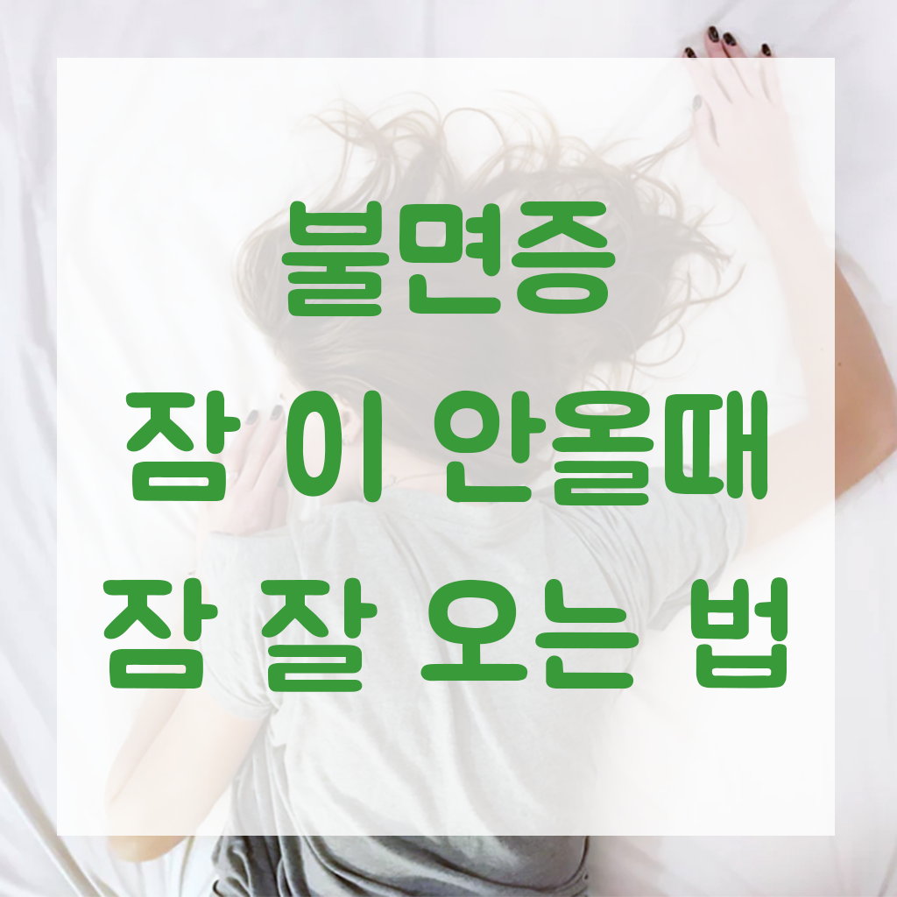

불면증 / 잠이 안올때 잠 잘 오는 법 2가지 소개합니다!
불면증으로 잠이 안올때, 잠 잘 오는법 2가지!
현대인의 큰 고충. 바로 불면증입니다. 꼭 자야하는데 잠이 안와서 잠을 설칠때 정말 괴롭죠. 저도 자주 사용하는 잠이 안올때 잠 잘 오는법 2가지를 소개해드립니다. 건강과도 직결되는 수면장애. 많은 도움 되시길 바라며~ 시작합니다.
불면증으로부터 해방돼버리기~!
* 4-7-8 호흡 수면법
여러 미디어를 통해 이미 유명해진 4-7-8 호흡법 입니다.
호흡법으로 신진대사를 낮춰 잠에 빠져드는 방법 입니다.
- 똑바로 누운 상태에서 몸의 긴장을 푼다
- 4초 숨을 들이마시고
- 7초 참은 후
- 8초 숨을 천천히 뱉는다
처음엔 초를 세느라 오히려 잠이 더
깨는 것 같은 기분이 드는데,
꼭 몇초를 준수해라 이런느낌보다는
아무생각 없이 아주 천천히
숨을 들이마시고, 참고, 뱉는다.
훈련을 하지않은 사람도
쉽게 잠들 수 있는 방법이다.
목차로 이동

* 미 해군이 훈련하는 수면법 : 전쟁터에서도 잠이 잘 오는 이유
2분만에 잠들 수 있는 미 해군이 알려주는 수면법입니다.
미 해군 입대 후 반드시 받는 훈련 중 하나라고 합니다.
스트레스와 소음 속에서도 꿀잠을 잘 수 있는 미 해군 수면법으로 2분만에 잠들어보자.
- 등을 땅에 대고 똑바로 눕는다.
- 침대에 누운 상태에서 눈과 입 주변의 긴장을 풀어준다.
- 어깨의 긴장을 풀고 팔에서 힘을 뺀다.
- 숨을 천천히 내쉬며 가슴과 배의 긴장을 푼다.
- 허벅지와 종아리의 긴장을 푼다.
- 발목과 발끝까지 긴장을 푼다.
- 마치 해파리처럼 연체동물이 된 것처럼 침대에 몸을 맡긴다.
- 이제 평화로운 호수에 떠있는 작은 배를 상상해본다.
- 그 배에 누워 천천히 흔들리는 느낌을 느껴본다.
머리부터 발 끝까지 긴장을 풀고
호흡을 아주 천천히 하면서
바다위에 누워있는 상상으로
잡생각을 없애는 방법 같은데
강제적인 호흡법으로 신진대사를 낮추는
4-7-8 호흡법보다는
미 해군에서도 2~3달정도 훈련이 필요한
수면법이라고 소개했다.
목차로 이동
잠이 안올때 잠 잘오는 법 2가지 수면법으로 꿀잠 자버리고, 불면증 꼭 해결하시기 바랍니다.
같은 카테고리의 다른 글
Home| 불면증 / 잠이 안올때 잠 잘 오는 법 2가지 소개합니다! | 2019. 03. 10 |
|---|---|
| 애드센스 승인 후기 (애드고시 합격 팁) 20일만에 성공~! | 2019. 03. 09 |
| 솔렌트카 보험대차/사고대차 보험약관 개정 전 후 | 2019. 02. 22 |
| 롯데월드 매직패스 솔직 후기. 깜놀 | 2019. 02. 15 |